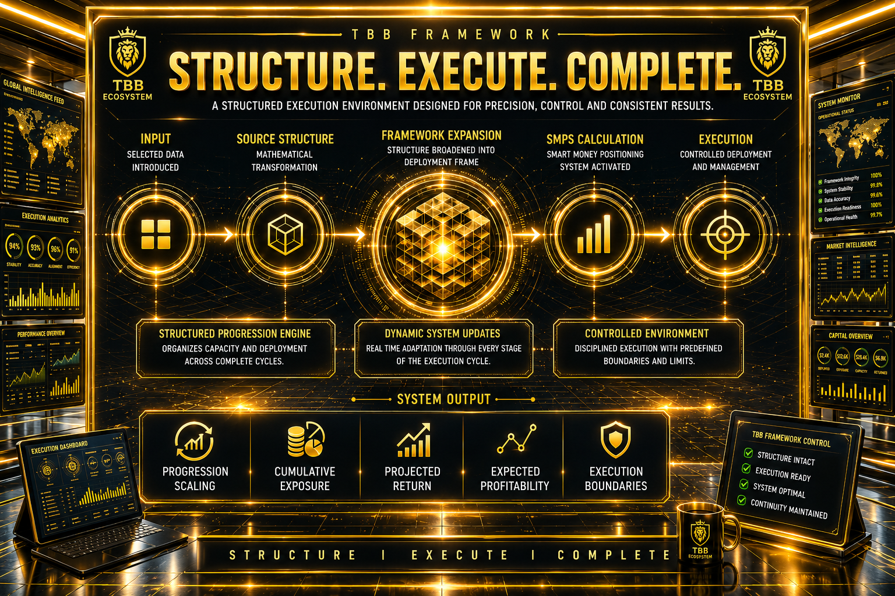

The TBB Framework is a structured execution environment that transforms a selected source structure into a controlled deployment model. Through mathematical expansion, dynamic positioning, and disciplined execution management, the framework organizes progression, exposure, profitability, and operational boundaries within a single ecosystem.

The TBB Framework operates as a structured execution environment designed to transform positioning structures into controlled deployment and exposure models.
The framework begins with a constant source structure, where a selected input is introduced into the system. Through a proprietary mathematical transformation process, the source structure is expanded into a broader deployment framework used for execution.
Once deployment structures are generated, the Smart Money Positioning System (SMPS) automatically calculates:
The framework uses a structured progression engine combined with exposure management logic to organize capital deployment across complete execution cycles.
At every stage of the cycle, the system dynamically updates:
The framework is designed to provide:
Rather than relying on random or emotional decision-making, the TBB Framework focuses on disciplined execution, progression structure, and automated operational calculations within a controlled environment.
Back Home